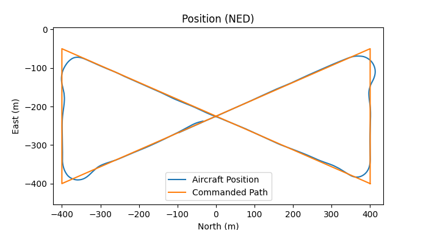
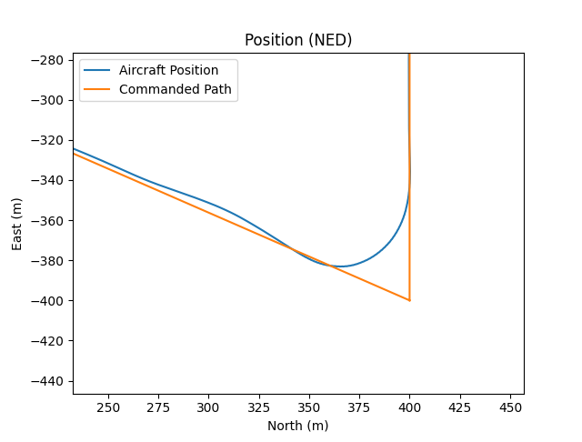

Path Manager¶
Overview¶
The path manager is responsible for calculating and publishing the current path to the path follower. It is split into a base class and an inherited class. The base class handles the ROS2 interfaces (publishing and subscribing) while the inherited class manages the path, i.e., calculates the parameters for the current path.
The path manager is designed this way so that the inherited class (how the paths are managed) can be replaced or rewritten without affecting the overlying ROS2 interface.
Both the path_manager_base and the path_manager_example are included in the same ROS2 node when compiled, called path_manager.
Parameters associated with the path_manager_base or the path_manager_example will therefore be visible under the path_manager ROS2 node.
More details about the path manager can be found in Small Unmanned Aircraft: Theory and Practice by Dr. Randal Beard and Dr. Tim McLain.
Path Manager Base¶
The path manager base contains all the ROS2 interfaces required for the path manager. A list of these interfaces is below.
List of ROS2 Interfaces¶
| ROS2 Interface | Topic or Service | Explanation | Message or Service Type |
|---|---|---|---|
vehicle_state_sub_ |
/estimated_state |
Subscribes to the estimated aircraft state | rosplane_msgs::msg::State |
new_waypoint_sub_ |
/waypoint_path |
Subscribes to the waypoint messages published by path_planner |
rosplane_msgs::msg::State |
current_path_pub_ |
/current_path |
Publishes the parameters of the current path | rosplane_msgs::msg::CurrentPath |
update_timer_ |
-- | ROS2 timer that controls how frequently current_path_pub_ publishes |
-- |
Interface with the Path Follower¶
The path_manager node interfaces with the path follower by publishing to the /current_path topic.
These messages contain information about the current trajectory, which are either straight lines or circles.
Note that the only supported path types are straight lines and circles.
Depending on how the path_manager is set up to manage the waypoints, this may not be suitable for your application.
See "Modifying the Path Manager" for more information.
For more information on the path follower, see the Path Follwer documentation.
Path Manager Example¶
The path_manager_example class inherits from the path_manager_base class.
Specifically, the path_manager_example overrides the path_manager_base::manage method to determine how the path is managed.
In the current implementation, path_manager_example decides to manage a waypoint using straight lines and fillets, orbits, or Dubins paths based on the current state of the aircraft, the values of the current ROS2 parameters, and the waypoints given.
For example, if the use_chi field on a Waypoint object (see Path Planner for more information) is set to true, then path_manager_example will use a Dubins path to navigate to the next waypoint.
If use_chi is set to false, then path_manager_example will use straight lines when navigating in between waypoints and a fillet to manage the corners.
See Figure 1 for an example of a real flight path flown using ROSplane with chi_d set to false.
|  |
|---|
|  |
| Example flight path from an actual flight test showing the straight lines and fillets path type |
Note that using fillets to manage the corners often means that the aircraft does not actually achieve the waypoint.
If this is undesireable in your application, use Dubins paths or another method for the path_manager.
Parameters¶
See the Parameter Management page for more details on how parameter management works.
List of Parameters¶
| Parameter | Explanation | Type | Range |
|---|---|---|---|
R_min |
Minimum radius for orbit, fillet, and Dubins paths | double | \geq 0.0 |
orbit_last |
Specifies whether or not to orbit the last waypoint. If false, param_manager will fly a circuit |
bool | true or false |
The orbit_last Parameter¶
The path_manager node has a parameter named orbit_last.
This parameter controls what happens as the aircraft is approaching the last waypoint in the set of waypoints published to the path_manager.
If orbit_last is set to true, then path_manager will follow an orbit around the last waypoint.
The direction of this waypoint (clockwise or counterclockwise) will be chosen based on which direction requires the least amount of turning.
In other words, if the aircraft is angled slightly left as it approaches the waypoint, path_manager will choose to orbit the last waypoint counterclockwise (from a top-down perspective).
If the aircraft is pointing slightly right as it approaches the waypoint, it will orbit the waypoint clockwise (from a top-down perspective).
Modifying the Path Manager¶
Changes or additions to any ROS2 interfaces should be done in the path_manager_base field.
Changes to how path_manager "manages" the waypoints should be done by overriding the path_manager_base::manage method.
If you wish to change the way paths are defined, make sure that the /current_path topic is rewritten to contain the required information, and then make sure the path_follower knows how to handle the new definition.